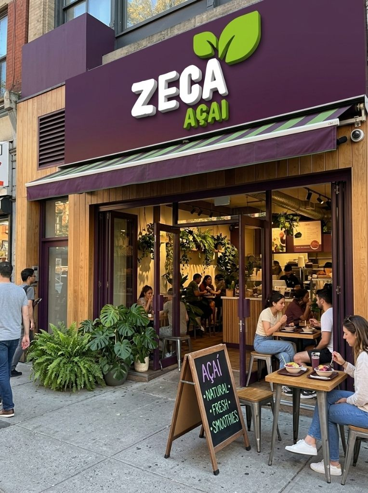
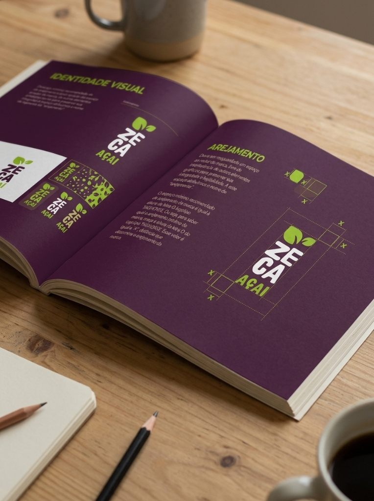
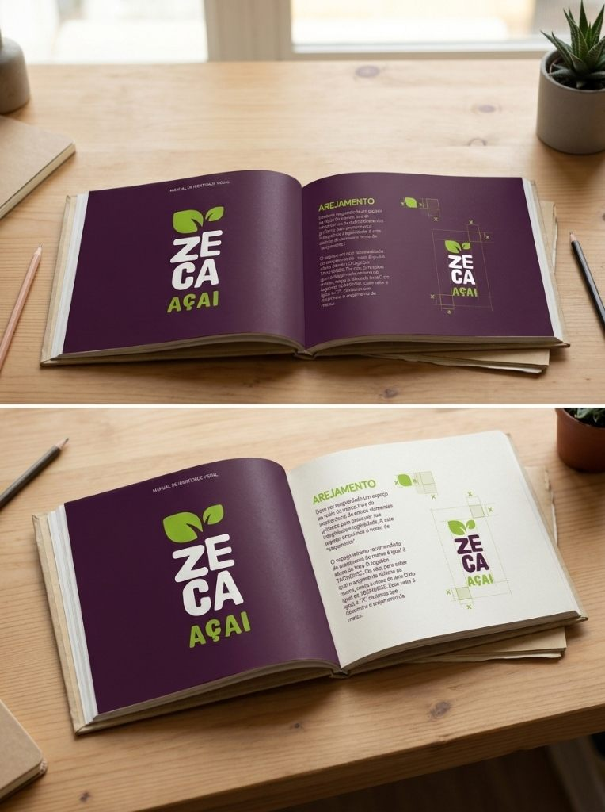
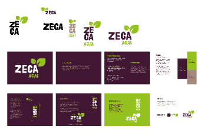
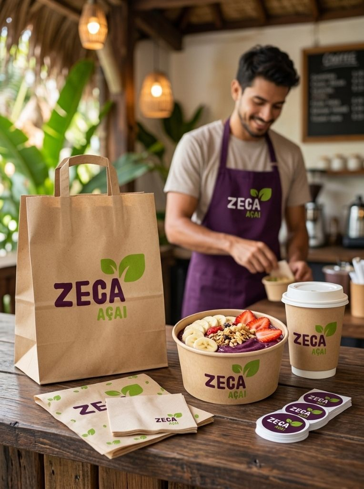

Sabor e energia
em identidade.
Uma identidade construída a partir da intensidade do açaí e da vitalidade da folha verde. Tipografia de presença marcante, equilíbrio cromático e diretrizes rigorosas se unem em uma marca autêntica, viva e memorável.


A fruta e a folha.
Uma assinatura autêntica.
O conceito visual de Zeca Açaí nasceu da conexão direta entre a origem natural do produto e a energia que ele proporciona no dia a dia. A tipografia robusta e de cantos expressivos transmite acolhimento, solidez e vitalidade, enquanto as folhas verdes que brotam da terminação do 'A' trazem organicidade, frescor e brasilidade à marca.
A família de assinaturas foi projetada para garantir máxima versatilidade: da composição horizontal clássica com descritor à redução vertical compacta para rótulos, copos, uniformes e fachadas.



Assinaturas & Grid
Variações horizontal clássica, compacta vertical e ícone simplificado para assegurar legibilidade em todas as mídias físicas e digitais.
Paleta Cromática
Roxo Açaí (#2C1028) para profundidade e sabor, Verde Folha (#84B819) para frescor, combinados ao papel Kraft e ao branco puro.
Embalagem & PDV
Aplicações com contraste otimizado para copos térmicos, bowls biodegradáveis, sacolas de entrega e vestuário da equipe.
Presença marcante
em cada contato.
No ponto de venda, a identidade se desdobra em uma experiência acolhedora. O avental roxo institucional com bordado no peito identifica os atendentes, enquanto as sacolas kraft e os adesivos seladores levam a mesma personalidade visual para as entregas a domicílio.
Das pranchas do manual à experiência no balcão, Zeca Açaí consolida um posicionamento claro: sabor autêntico, energia revigorante e proximidade genuína com o público.
